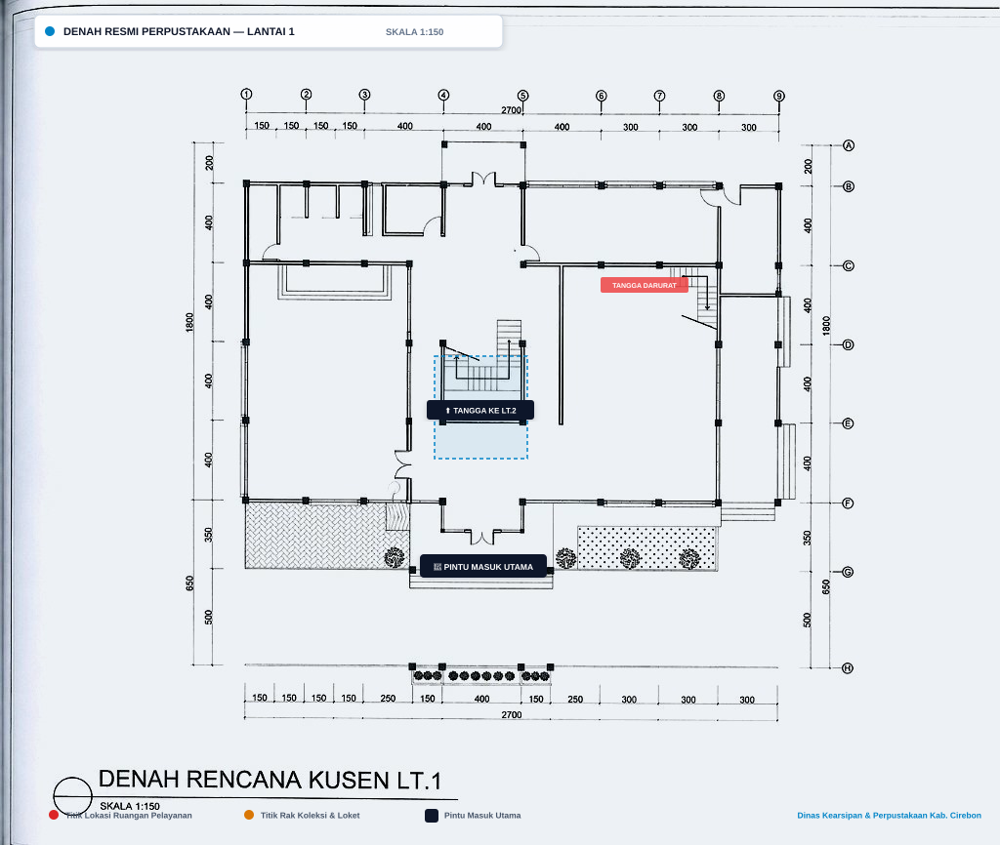
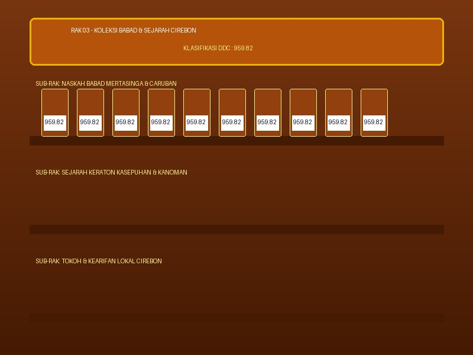

Dinas Kearsipan dan Perpustakaan Kabupaten Cirebon
Memuat zonasi denah aktif...

Gedung Perpustakaan — Lantai 1

admin@disarpus.cirebonkab.go.id
cirebon123
Pindai kode QR berikut untuk membuka sistem denah interaktif langsung di smartphone Anda saat berkeliling kantor dinas.